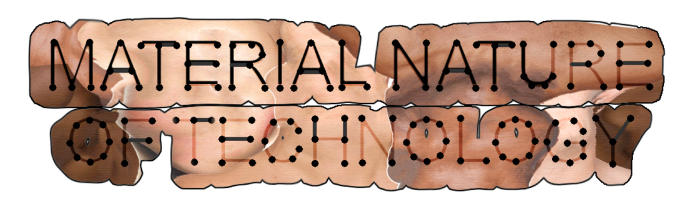
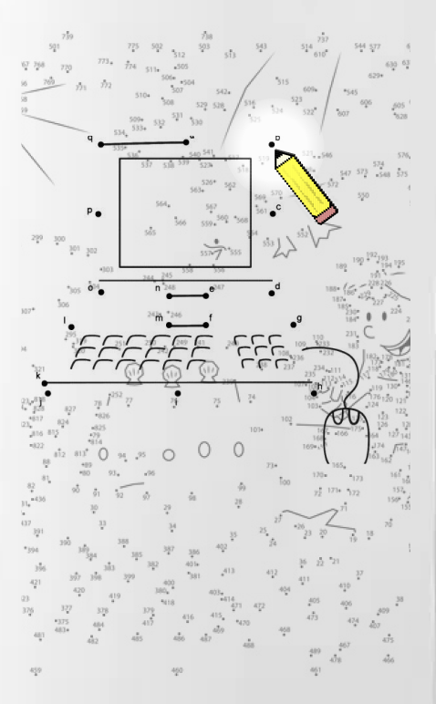
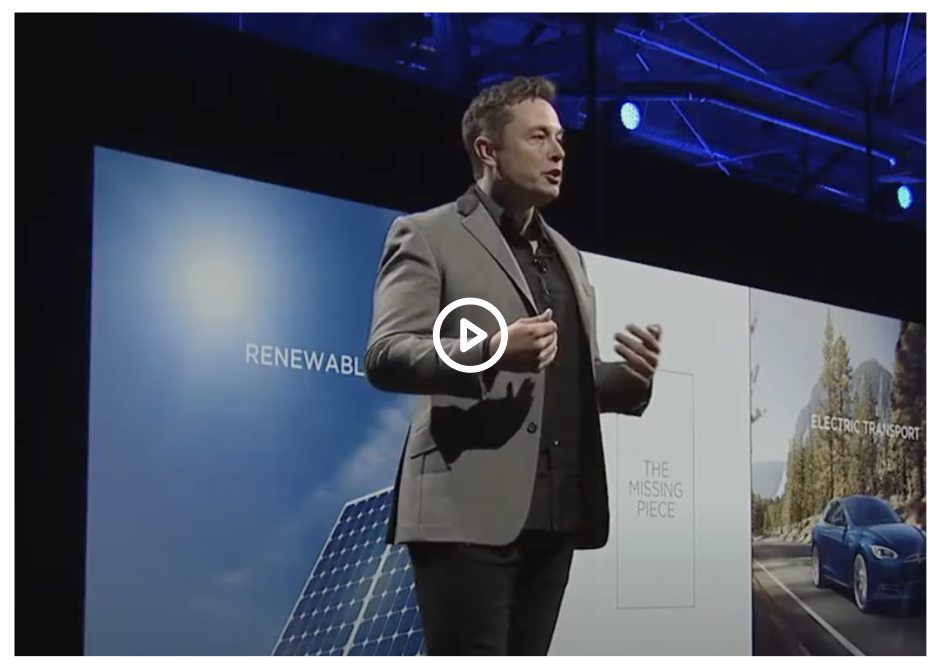
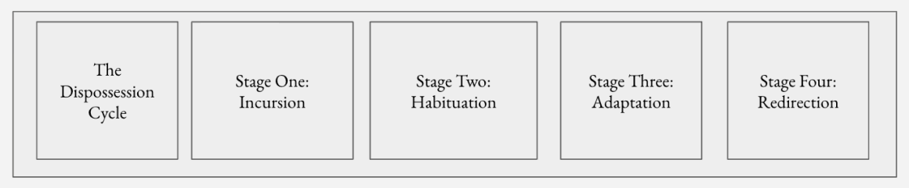

(Enticing Blurb) Thinking about technology’s life cycle, shame is located within the fact that producers hide/lie about manufacturing production practices, disregarding handling ethical concerns of labor and environmental effect. And further, as consumers, we’ve moved past shame, into unconscious acceptance of being required to use technologies with material origins we know little about. In this case, technology holds the opposite of shame, it holds hubris.
(Info summary / supportive blurb for interaction above) This research-based activity booklet ultimately aims to depict the dissonance between ‘the narrative’ that technology-consumers are sold v.s. the narratives’ flipside. The full-opacity layer page will display technology as we see it / how it is sold to us. This page will be printed on slightly translucent paper. The second under layer contains another connect-the-dot activity that is much messier. The dots will be based on a collage of photos, article excerpts, headlines, research, etc., all also seen along with the page’s dots. The idea is that as the player is tracing, they choose between the first layer of dots and the second layer of dots, facing the choice of drawing the surface level dots, or letting their pencil deviate to trace the second page’s dots, ruining the image in order to acknowledge the messiness and nuance of the technologies we use and rely on today.
Blurb about relating our perception of technology’s manufacturing -- is this shame? What is it when we’ve moved past shame, into unconscious acceptance? Explore becoming unbothered by / desensitized to something that we should feel ashamed about? Leave it open ended for the users by including a survey!
Is this shame? Is it manipulation? Is it ignorace?
Results of survey, supported by info about the dispossession cycle

Information that changes based upon what the user is hovering over on the right page
Topics these connect the dot experiences will examine: The Cloud, Apple Products, Lithium, Ubiquitous computing
1/5 ACTIVITY SHEET
NEXT PAGE -->
LET’S PLAY! CONNECT-THE-DOTS!


Collage video debunking tech company green washing
How much do you know about the product life cycle of the day-to-day technology you use?
Are you bothered by the unethical labor practices that Apple has been accused of on the media?
Nothing
What accustations?
I’m an expert
It’s terrible
Questionnaire
Do you feel cornered, or stuck, in the ways in which we are expect to utilize technology in our lives?
Yes
No

As surveillance capitalism migrates from Silicon Valley to a range of other firms and sectors, we gradually find ourselves in a world of no escape, “cornered” by converging, overlapping, and relentlessly expanding dispossession operations